- AnyThermal: a DINOv2-based thermal encoder obtained via RGB–thermal knowledge distillation, usable as a drop-in backbone for multiple tasks.
- Task-agnostic training: contrastive distillation on CLS tokens across multiple RGB–T datasets spanning urban, indoor, aerial, and off-road environments.
- Downstream performance: state-of-the-art cross-modal place recognition, thermal segmentation, and monocular thermal depth estimation, outperforming comparable RGB-only backbones.
- TartanRGBT platform: first open-source synchronized stereo RGB–stereo thermal, IMU data collection rig built on NVIDIA Orin and FLIR Boson sensors.
- TartanRGBT dataset: a balanced, diverse RGB–T dataset across four environments (indoor, urban, parks, off-road) with registered, time-synced pairs.
AnyThermal — Universal Thermal Perception Backbone
Accepted to ICRA 2026!
TL;DR: AnyThermal is a universal thermal backbone for
• Cross-modal place recognition • Thermal segmentation • Thermal depth estimation
Abstract
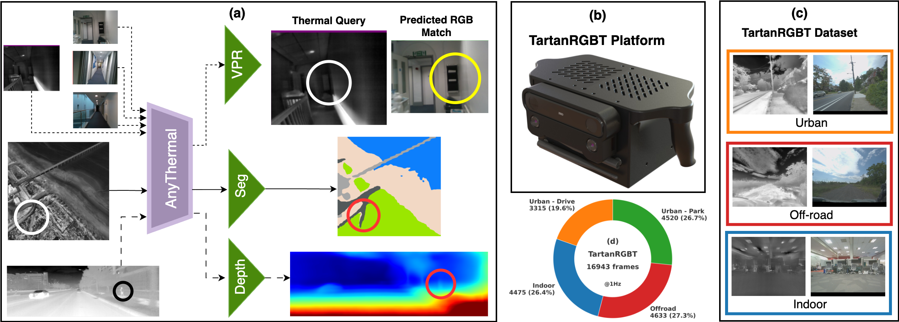
We present AnyThermal, a task-agnostic thermal feature extraction backbone designed to provide strong generalization across diverse robotic perception tasks and environments.
AnyThermal is distilled from large-scale RGB foundation models (DINOv2) using synchronized RGB–thermal data collected from urban, indoor, aerial, and off-road domains.
To support this, we introduce the TartanRGBT Platform, an open-source hardware system for synchronized RGB–thermal data collection, and the TartanRGBT Dataset, a diverse multi-environment RGB–thermal dataset.
AnyThermal achieves state-of-the-art performance on cross-modal place recognition, thermal segmentation, and monocular thermal depth estimation, with improvements of up to 36% over existing baselines.
Key Contributions


AnyThermal Backbone
RGB–Thermal Distillation
AnyThermal uses two ViT-B/14 DINOv2 encoders: a frozen RGB teacher and a trainable thermal student, both initialized with pre-trained RGB weights.
Thermal images are converted to three channels and passed through the student; a contrastive loss aligns the CLS-token embeddings of corresponding RGB–thermal pairs, encouraging shared global semantics while relaxing pixel-perfect alignment.
Distillation is performed across multiple RGB–T datasets, allowing the backbone to learn environment-agnostic thermal features that support diverse downstream heads.
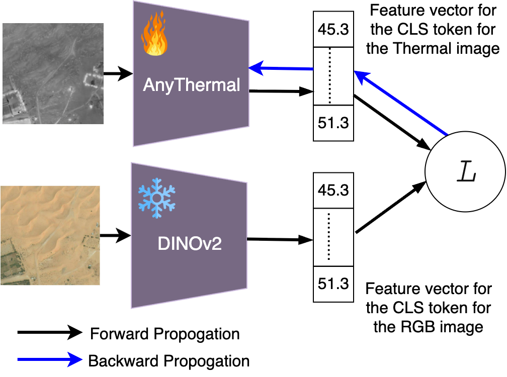
Overview of RGB–thermal distillation and task-specific heads (VPR, segmentation, depth).
Task Heads (Frozen Backbone)
- Cross-modal Place Recognition: SALAD head over AnyThermal features with triplet loss.
- Thermal Segmentation: a lightweight two-layer MLP head over ViT patch embeddings.
- Mono-thermal Depth: MiDaS-style encoder–decoder using multi-scale AnyThermal features.
TartanRGBT Platform

CAD model and wiring overview of the handheld TartanRGBT platform.

Camera and sensor placement in the TartanRGBT platform.
The TartanRGBT platform is a handheld rig that captures synchronized stereo RGB, stereo thermal, and IMU at 30 Hz using a ZED X camera, two FLIR Boson 640+ thermal cameras, and an NVIDIA Jetson AGX Orin 64 GB computer.
All cameras are hardware-timed: the ZED X pair is factory-synced, and a trigger from the capture card synchronizes the thermal cameras via external sync pins in slave mode.
A custom 3D-printed enclosure with ergonomic handles, cooling fans, and exposed ports makes the system field-ready, while Docker-based auto-launch and a single recording button simplify operation.
Calibration & Registration
- Thermal intrinsics are calibrated using a custom heated checkerboard, followed by fisheye rectification of thermal images.
- Extrinsics between RGB and thermal cameras are derived from the CAD model, enabling 3D-aware alignment.
- Registered RGB–thermal pairs are produced by estimating dense depth with FoundationStereo, transforming points into the thermal frame, and projecting with thermal intrinsics.
| 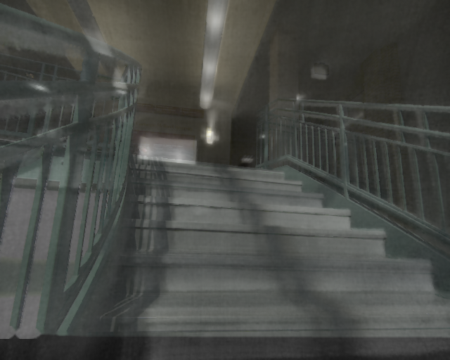 | 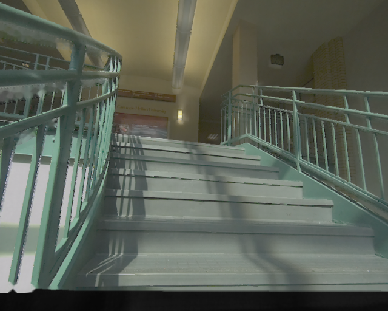 | 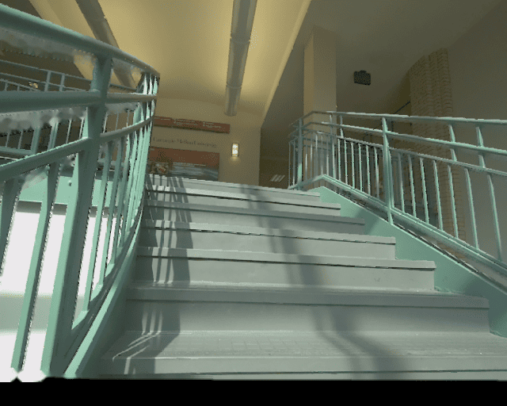 | ||
| 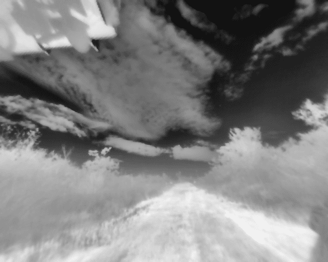 | 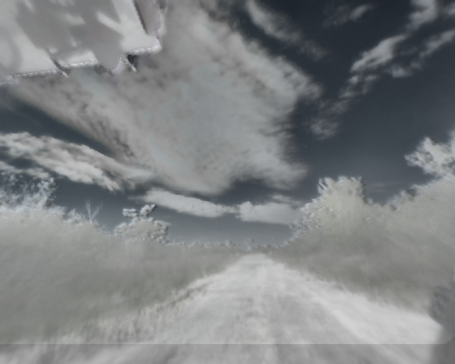 | 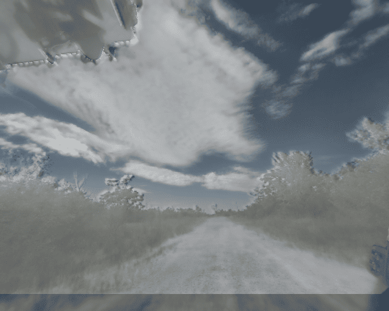 | 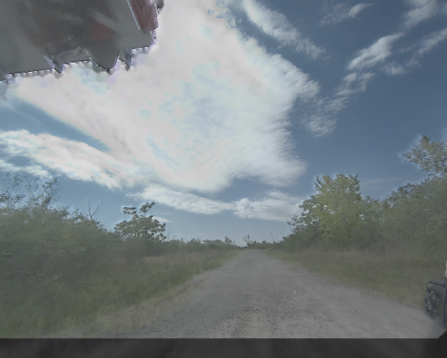 | 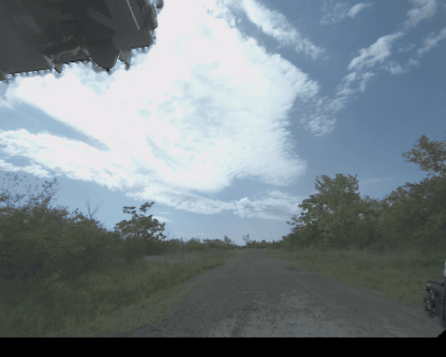 |
 |
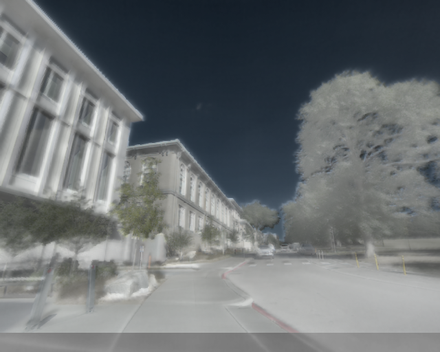 | 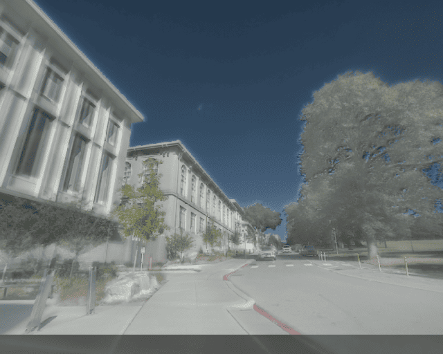 | 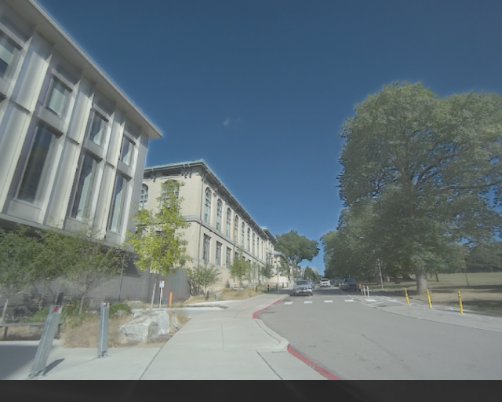 | 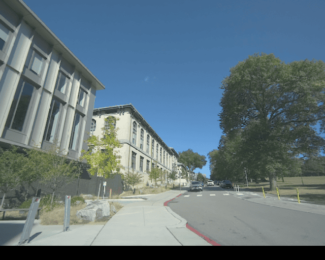 |
| α = 0.00 | α = 0.25 | α = 0.50 | α = 0.75 | α = 1.00 |
Alpha-blended RGB–thermal overlays across different scenes (α controls the transparency of the thermal image over the RGB image), showing pixel-wise alignment.
TartanRGBT Dataset
The TartanRGBT dataset consists of 16,943 synchronized, registered RGB–thermal pairs sampled at 1 Hz for non-redundant distillation, covering indoor, urban driving, parks, and off-road environments.
Each sequence includes stereo RGB, stereo thermal, IMU, and thermal FFC status.
Diversity Compared to Existing RGB–T Datasets
| Dataset | Platform | RGB–T Pairs @1 Hz | Sync | Registered | Indoor | Off-road | Aerial | Urban Drive | Urban Park |
|---|---|---|---|---|---|---|---|---|---|
| MS2 | Vehicle | 16,215 | Yes | No | No | No | No | Yes | No |
| ViVID++ | Handheld/Vehicle | 14,824 | Mixed | No | Limited | No | Yes | Yes | No |
| CART | Handheld/Drone | 9,678 | Mixed | Yes | No | Yes | Yes | Yes | No |
| OdomBeyondVision | Drone/UGV/Handheld | 7,129 | Yes | No | Yes | No | No | No | No |
| TartanRGBT (Ours) | Handheld | 16,943 | Yes | Yes | Yes | Yes | No | Yes | Yes |
Results Across Tasks
Cross-Modal Place Recognition
AnyThermal with a SALAD head (AnyThermal-VPR) surpasses RGB-only and RGB–thermal baselines on MS2 (urban), CART (aerial), and OdomBeyondVision (indoor) in Recall@1.
| Model | Backbone | Head | MS2 R@1 | CART R@1 | OBV R@1 |
|---|---|---|---|---|---|
| DINOv2 | DINOv2 | CLS | 27.21 | 25.98 | 29.49 |
| SALAD | DINOv2 | SALAD | 76.97 | 49.38 | 38.94 |
| ImageBind | ViT-H | CLS | 0.79 | 1.13 | 10.25 |
| SGM | ResNet-18 | NetVLAD | 20.02 | 45.59 | 21.05 |
| AnyThermal | AnyThermal | CLS | 75.39 | 45.45 | 45.40 |
| AnyThermal-VPR | AnyThermal | SALAD | 81.11 | 56.00 | 53.17 |

RGB-only failure vs. AnyThermal correct match.

Cross-modal retrieval improvement using AnyThermal.
Thermal Segmentation
On MFNet, AnyThermal with a two-layer MLP segmentation head achieves 53.47% mIoU and runs at 6.79 FPS on Orin, outperforming RTFFNet-152 and MCNet while being up to 3.6× faster than the closest competitor.
| Model | Params (M) | mIoU (%) | FPS (Orin) |
|---|---|---|---|
| RTFNet-152 | 196.37 | 47.00 | 8.37 |
| MCNet | 54.65 | 51.95 | 1.88 |
| RGB DINO-SEG | 87.02 | 45.46 | 6.79 |
| AnyThermal-SEG | 87.02 | 53.47 | 6.79 |
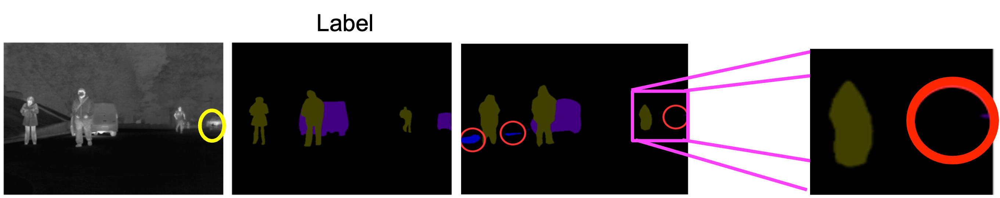
Baseline segmentation vs. AnyThermal prediction.
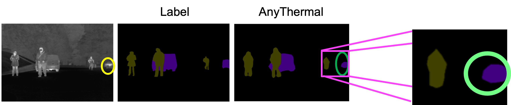
Improved boundary and class consistency with AnyThermal.
Mono-Thermal Depth Estimation
Plugging AnyThermal into MiDaS on MS2 yields lower AbsRel and RMSE than EfficientNet-Lite3 and RGB DINOv2 backbones.
| Backbone | AbsRel ↓ | SqRel ↓ | RMSE ↓ | RMSElog ↓ |
|---|---|---|---|---|
| EfficientNet-Lite3 | 0.1015 | 0.3955 | 2.9587 | 0.1417 |
| DINOv2 ViT-B/14 | 0.0905 | 0.3177 | 2.7493 | 0.1208 |
| AnyThermal | 0.0883 | 0.3142 | 2.7432 | 0.1182 |
Scaling Data & Diversity
Ablations over pre-training datasets show that simply adding more urban sequences leads to saturation, whereas including TartanRGBT significantly boosts VPR, segmentation, and depth performance across domains.
The performance curves indicate that AnyThermal has not yet plateaued with current RGB–T data, suggesting further gains from broader, more diverse thermal datasets.
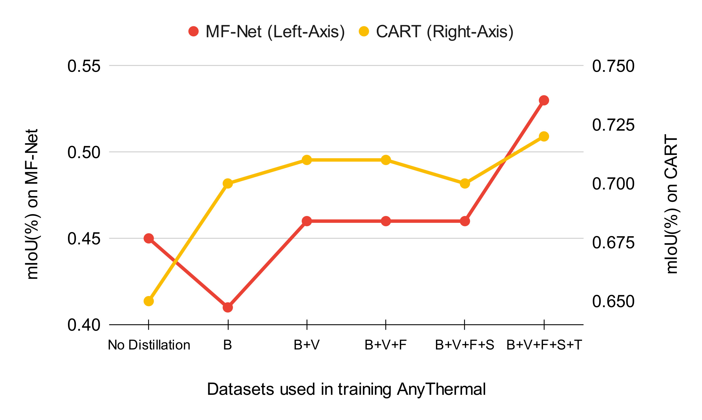
Segmentation performance vs. pretraining datasets (B, V, F, S, T).
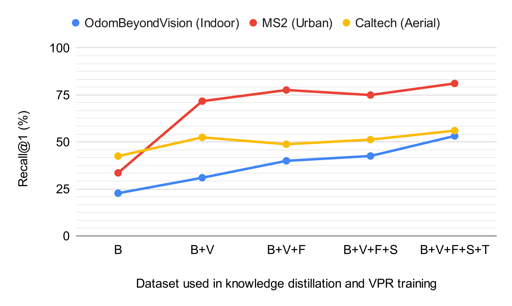
Cross-modal place recognition performance vs. dataset diversity.
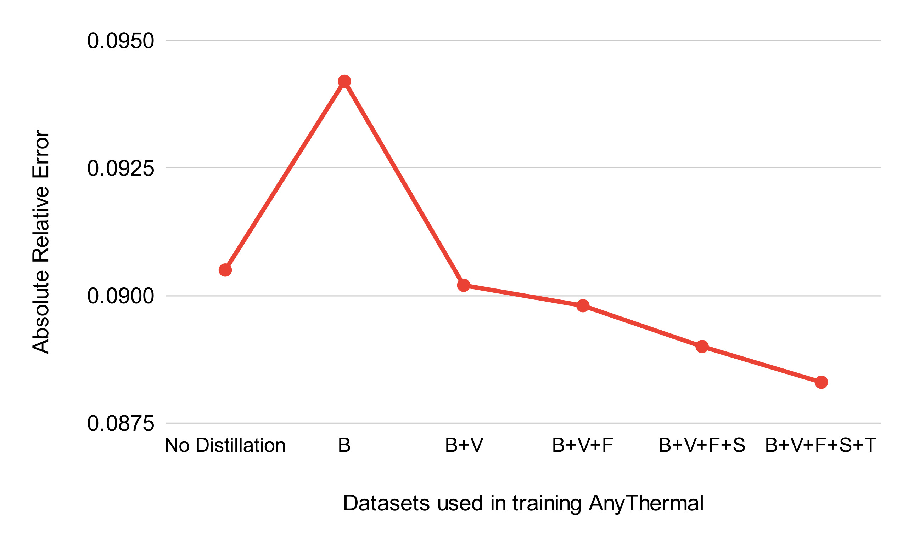
Monocular thermal depth estimation error vs. dataset diversity.
Code, Data & Contact
BibTeX
If you find our repository useful, please consider giving it a star ⭐ and citing our paper in your work:
@inproceedings{maheshwari2026anythermal,
title = {AnyThermal: Towards Learning Universal Representations for Thermal Perception},
author = {Maheshwari, Parv and Karhade, Jay and Chawla, Yogesh and Adu, Isaiah and
Heisen, Florian and Porco, Andrew and Jong, Andrew and Liu, Yifei and
Pitla, Santosh and Scherer, Sebastian and Wang, Wenshan},
booktitle = {Proceedings of the IEEE International Conference on Robotics and Automation (ICRA)},
year = {2026}
}